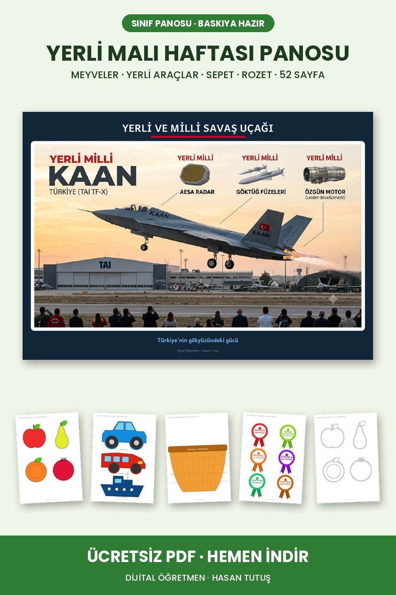

Görseller sitedeki gerçek sayfalardan. En yeni pinler en üstte.
Pinterest'e yükleme
Görselin üstüne parmağını basılı tut, "Resmi indir" de. Galeriye iner.
Pinterest'te Oluştur, sonra Pin'e dokun ve görseli seç.
Başlık, açıklama ve bağlantıyı aşağıdaki Kopyala düğmeleriyle yapıştır, panoyu seç, Yayınla.
Yeni pinler · 31 Ekim
Sıra önerisi: önce Yerli Malı ve ÇEDES Kasım, sonra Aralık ve Mevsim Ağacı. Ramazan, 12 Mart, 18 Mart, Kütüphane ve 23 Nisan pinlerini de şimdiden at, Pinterest'te birkaç ay önceden ısınmaları gerekiyor.

Pin 12
Başlık
Yerli Malı Haftası Panosu | Meyveler, Yerli Araçlar, Sepet, Rozet (Ücretsiz PDF)
Açıklama
12-18 Aralık Tutum, Yatırım ve Türk Malları Haftası için 52 sayfalık pano seti. Yerli meyveler ve sepet, yerli otomobil, otobüs ve gemi, KAAN gibi yerli teknoloji afişleri, Yerli Malı dev harfleri, flama ve yaka rozetleri var. Meyve ve araçların boyama hâlleri de sette. Ücretsiz PDF bağlantıda.
ÇEDES Kasım Panosu | Sevgi ve Aile Değerleri (Ücretsiz PDF)
Açıklama
Değerler eğitimi için Kasım ayı panosu. Sevgi köşesinde kalpli çiçekler ve çiçek bahçesi zemini, aile köşesinde ev şeklinde kartlar ve renkli ev zemini var. Kartların üstünde hazır cümleler var, boş olanlara çocuklar kendi cümlesini yazıyor. Dev harflerle birlikte 34 sayfa. Ücretsiz PDF bağlantıda.
ÇEDES Aralık Panosu | Adalet, Dürüstlük, Duyarlılık, Özgürlük (Ücretsiz PDF)
Açıklama
Değerler eğitiminde Aralık ayının dört değeri için pano seti. Adalet için terazi, dürüstlük için deniz feneri ve kayıklar, duyarlılık için büyüteç, özgürlük için uçurtma kartları. Her değerin kendi zemini, cümle kartları ve dev harfleri var, toplam 85 sayfa. Ücretsiz PDF bağlantıda.
Mevsim Ağacı Panosu | Dört Mevsim, 12 Ay Kartı (Ücretsiz PDF)
Açıklama
Aynı ağacın dört mevsimdeki hâli: sonbahar, kış, ilkbahar ve yaz. Her mevsim A3 boyutunda ayrı poster. Yanında 12 ay kartı ve mevsim yazıları var, ay değiştikçe panoyu güncellemek kolay. Bütün yıl sınıfta kalabilecek bir pano. Ücretsiz PDF bağlantıda.
Ramazan Panosu | 4 Haftalık Set ve 30 Günlük Ramazan Takvimi (Ücretsiz PDF)
Açıklama
2027 Ramazanı için dört haftaya bölünmüş pano seti: hoş geldin, oruç ve paylaşma, Ramazan gelenekleri ve bayram. Her haftanın kendi panosu var, ayrıca A3 büyük boy 30 günlük iyilik takvimi. Ayet ve hadis sayfaları süslü çerçeveli. Toplam 92 sayfa. Ücretsiz PDF bağlantıda.
12 Mart İstiklâl Marşı'nın Kabulü Panosu | Afiş, Mehmet Akif, 10 Kıta (Ücretsiz PDF)
Açıklama
12 Mart İstiklâl Marşı'nın Kabulü ve Mehmet Akif Ersoy'u Anma Günü için 75 sayfalık pano seti. Büyük afiş, Mehmet Akif ve Atatürk sayfaları, marşın hikâyesi, 10 kıtanın tamamı, flama, dev harfler ve yapboz etkinliği var. Ücretsiz PDF bağlantıda.
18 Mart Çanakkale Zaferi Panosu | Afiş, Sütunlar, Flama, Rozet (Ücretsiz PDF)
Açıklama
18 Mart Çanakkale Zaferi ve Şehitleri Anma Günü için 40 sayfalık pano seti. Çanakkale Şehitler Abidesi afişleri, Çanakkale Geçilmez yazısı, kesmelik sütunlar, dev harfler, flama ve yaka rozetleri. Sütunların boyama hâli de var. Ücretsiz PDF bağlantıda.
Kütüphane Haftası Panosu | Hayal Kitabı Yapboz Afiş, Kitap Okuyan Figürler (Ücretsiz PDF)
Açıklama
Kütüphane Haftası için alışılmışın dışında bir pano. Ortada A4'lere bölünmüş yapboz hayal kitabı afişi, etrafında kitap okuyan baykuş, tilki ve çocuk figürleri, uçuşan yıldızlar ve kitap sözleri. Kütüphane sahnesi, flama ve söz şeritleriyle 75 sayfa. Ücretsiz PDF bağlantıda.
23 Nisan Dünya Çocukları Panosu | Bayraklı Çocuklar, Balonlar, Rozet (Ücretsiz PDF)
Açıklama
23 Nisan Ulusal Egemenlik ve Çocuk Bayramı için 66 sayfalık pano seti. Kendi ülkesinin kıyafeti ve bayrağıyla dünya çocukları, renkli balonlar, güvercinler, dünya, 23 Nisan dev harfleri, flama ve yaka rozetleri. Çocukların boyama hâlleri de sette. Ücretsiz PDF bağlantıda.
1. Sınıf T Sesi Fasikülü | Ses, Hece, Okuma, Yazma, Dikte (Ücretsiz PDF)
Açıklama
1. sınıf ilk okuma yazma için 21 sayfalık T sesi fasikülü. Sesi tanıma, büyük ve küçük T yazımı, a-n-e-t sesleriyle hece, kelime ve cümle çalışmaları, okuma sayfası, görsel dikte ve dinleme diktesi, harf avı ve boyama. 2 rakamı da fasikülde. Maarif Modeli ses sırasına uygun. Ücretsiz PDF bağlantıda.
Kızılay Haftası Panosu | Çadır, Yardım Tırı, Bilgi Kartları (Ücretsiz PDF)
Açıklama
Kızılay Haftası için 22 sayfalık sınıf panosu seti. Ortada büyük Kızılay çadırı, altında yardım tırı ve iyilik kolileri, iki yanda kan bağışından afet yardımına bilgi kartları var. Boyama sayfası ve söz kartları da sette. A4'e basılır, kesilip panoya asılır. İlkokul öğretmenleri için ücretsiz, bağlantıdan indirebilirsiniz.
10 Kasım Saat Panosu | 9.05'te Duran Yapraklı Saat (Ücretsiz PDF)
Açıklama
10 Kasım Atatürk'ü Anma Haftası için farklı bir pano fikri. Yeşil yapraklardan bir saat, akrep ve yelkovan 9.05'te duruyor, sararan yapraklar sonbaharı anlatıyor. Üstte ve altta söz şeritleri, kenarlarda dökülen yapraklar. Hazır baskı ya da öğrencilerin yaprak yapıştırarak tamamladığı iki seçenek var. Ücretsiz PDF bağlantıda.
24 Kasım Öğretmenler Günü Gül Buketi Panosu | Kırmızı Güller (Ücretsiz PDF)
Açıklama
24 Kasım Öğretmenler Günü için kırmızı güllü dev buket panosu. Yandan ve tepeden olmak üzere iki buket seçeneği var, ikisi de A2 tek sayfa ya da A4'lere bölünmüş parçalar hâlinde. Kırmızı güller, Öğretmenler Günü flaması, 24 KASIM dev harfleri ve Atatürk'ün söz kartları sette. Ücretsiz PDF bağlantıda.
3 Aralık Dünya Engelliler Günü Panosu | Engel Olma, İşaret Dili, Rozet (Ücretsiz PDF)
Açıklama
3 Aralık Dünya Engelliler Günü için renkli sınıf panosu. ENGEL OLMA dev harfleri, Dünya Engelliler Günü flaması, slogan kartları ve ortada afiş. Sette işaret dili bilgi sayfası, yaka rozetleri ve sarı yol gibi erişilebilirlik sembolleri de var. Farkındalık haftası için hazır. Ücretsiz PDF bağlantıda.
1. Sınıf L Sesi Fasikülü | Ses, Hece, Okuma, Yazma, Dikte (Ücretsiz PDF)
Açıklama
1. sınıf ilk okuma yazma için 20 sayfalık L sesi fasikülü. Sesi ayırt etme, büyük ve küçük L yazımı, hece ve kelime oluşturma, iki okuma metni, görsel dikte, eksik harf tamamlama ve 4 rakamı çalışması var. Sonunda boyama ve tebrik sayfası. Maarif Modeli ses sırasına uygun. Ücretsiz indirmek için bağlantıya tıklayın.
1. Sınıf L Sesi El İşi Seti | Maske, Taç, Olta Oyunu, Bağcık Geçirme (Ücretsiz PDF)
Açıklama
L sesi için 21 kalıplık el işi seti ve öğretmen kılavuzu. Lll maskesi, L harfi tacı, olta oyunu balıkları, bağcık geçirme harfi, kolaj için dev L, mandallı baş ses kartları, leyleğin L bacağı ve ses yolu arabası. A4'e basılır, makasla kolayca hazırlanır. Ücretsiz PDF bağlantıda.
Bunları daha önce paylaştıysan tekrar atmana gerek yok. Emin değilsen Pinterest profilinde bir bak, olmayanları paylaş.
Pin 1
Başlık
1. Sınıf A Sesi El İşi Seti | Maske, Taç, Yapboz, Bağcık Geçirme (Ücretsiz PDF)
Açıklama
A sesi öğretimi için 18 sayfalık el işi seti: "Aaa!" maskesi, harf tacı, harf yapbozu, bağcık geçirme harfi, kolaj için dev A, olta oyunu balıkları, sepet etiketleri ve görsel kartları. A4'e basılır, makasla kolayca hazırlanır. Sınıfta ya da evde kullanılabilir. Maarif Modeli'ne uygun ilk okuma yazma etkinliği. Ücretsiz indirmek için bağlantıya tıklayın.
Kes-Yapıştır Etkinlikleri: Duygu Yüzleri ve Sınıf Kurallarımız | 1. Sınıf Hayat Bilgisi
Açıklama
1. sınıf Hayat Bilgisi için renkli A4 kes-yapıştır çalışmaları. Duygu Yüzleri etkinliğinde çocuklar durumlara uygun duyguyu bulup yapıştırıyor; Sınıf Kurallarımız etkinliğinde doğru davranışları seçiyor. Parçalar büyük, kesmesi kolay. Okulun ilk haftaları için ideal. Ücretsiz PDF bağlantıda.
10 Kasım Atatürk'ü Anma Pano Seti | Dev Harfler, Afiş, Güvercinler (Ücretsiz PDF)
Açıklama
10 Kasım Atatürk'ü Anma Haftası için baskıya hazır 22 sayfalık sınıf panosu seti: her harfi tam A4 olan dev "10 KASIM" yazısı, Atatürk afişi, anma yazıları ve kesmelik güvercinler. Sınıf ve okul panoları için hazır. İlkokul öğretmenleri için ücretsiz indirme bağlantıda.
24 Kasım Öğretmenler Günü Panosu | Flama, Çiçekler, Buket, Rozet (Ücretsiz PDF)
Açıklama
24 Kasım Öğretmenler Günü için 54 sayfalık renkli pano seti: "Öğretmenler Günü Kutlu Olsun" flamaları, kesmelik çiçekler ve boyama hâlleri, buket şablonu, yaka rozetleri ve Atatürk'ün öğretmenlerle ilgili sözleri. A4'e basıp kesmeniz yeterli. Ücretsiz PDF bağlantıda.
3 Aralık Dünya Engelliler Günü Panosu | Afiş, İşaret Dili, Flama, Rozet
Açıklama
3 Aralık Dünya Engelliler Günü için 48 sayfalık sınıf panosu seti: "Engelli Olma, Engel Olma" afişi, işaret dili köşesi, flamalar ve yaka rozetleri. Farkındalık haftası için sınıfta kullanmaya hazır. İlkokul öğretmenlerine ücretsiz PDF, bağlantıda.